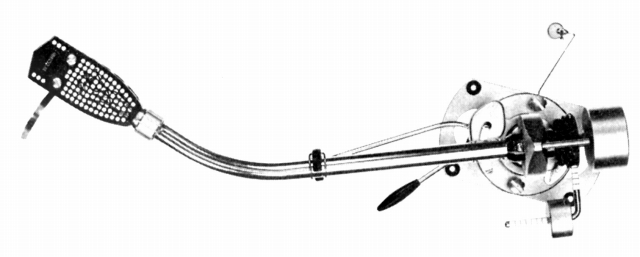
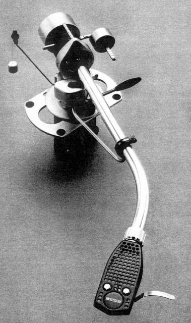
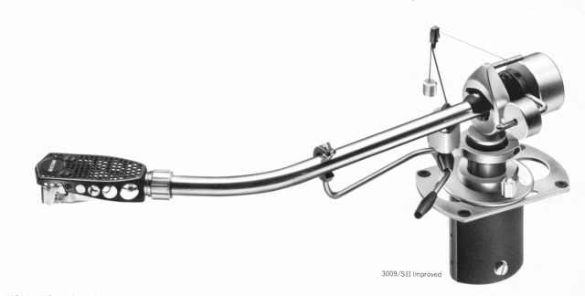
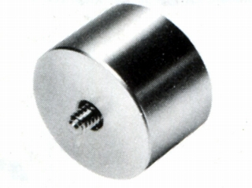

3009 Series�UImproved



■価格 32,500円
■型式 スタティックバランス型
■全長 322�o
■実行長 229�o
■オーバー・ハング
■トラッキングエラー
■針圧範囲 0〜1.5g
0.25gステップ
■アーム高さ調整 62〜79.5�o
■アームベース穴 28×70�o
■アンチスケートディバイス あり
■アームリフター あり
■ラテラルバランサー あり
■カートリッジ自重 4〜9g
■線間容量
■発売 1972年
■販売終了 年頃
■備考 価格は1973年頃のもの
1974年頃は34,500円
1975年頃は41,000円
1977年には36,900円
1979年には46,500円
1993年には85,000円
1995年には78,000円
スライドベース（移動範囲 ±12.7�o）装備。
別売りフルイドダンパー（FD200=13,500円)あり。
ローマス用メインウエィト(BL-1=5,000円)、
カートリッジ自重8〜14.5g用ウェイト(1902MWR=7,000円)、
カートリッジ自重14〜22g用ウェイト(1902HWR=8,500円)あり。
（上記オプションは1979年の価格）

（FD200。3009 Series�U、3012 Series�U
にも装備可能）


(ＢＬ-1）
SMEのインデックスへ